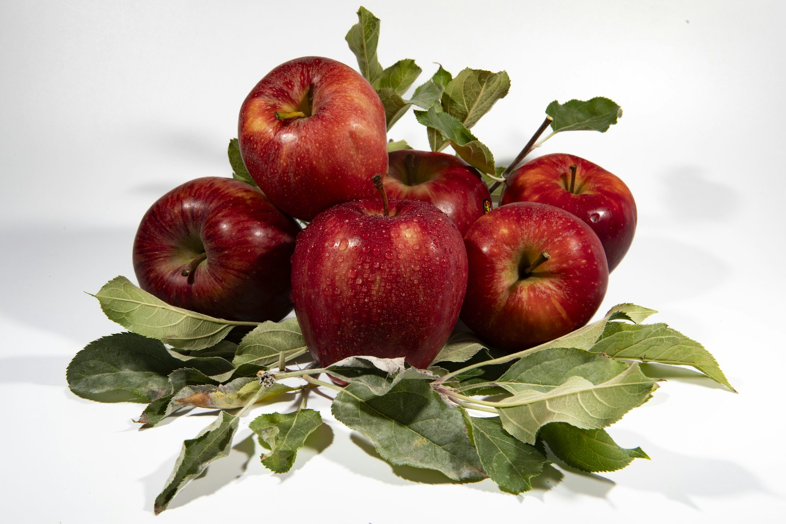

Energizing Your Workout: The Power of Pre-Exercise Nutrition
This article highlights the importance of pre-exercise nutrition and provides practical tips and food recommendations to maximize workout performance.The main goal of pre-exercise nutrition is to provide the body with the energy it needs to perform at its best. Consuming the right combination of carbohydrates, proteins, and fats can help optimize energy levels and improve endurance. Among these macronutrients, carbohydrates stand out as the primary fuel source for both aerobic and anaerobic activities. The body relies on carbohydrates to sustain energy during high-intensity workouts, making it crucial to include them in pre-exercise meals and snacks.
Complex carbohydrates are particularly beneficial for athletes. Foods such as whole grains, fruits, and vegetables release energy gradually, ensuring a steady supply of fuel throughout the workout. Brown rice, quinoa, oats, and whole grain bread are excellent sources of complex carbohydrates. Pairing these with protein-rich foods can further enhance their effectiveness. For example, a bowl of oatmeal topped with nuts and banana not only provides sustained energy but also includes healthy fats and proteins necessary for muscle maintenance.
Timing is also an essential factor in pre-exercise nutrition. It’s generally recommended to eat a larger meal 2-3 hours before exercising. This meal should consist of a balanced mix of carbohydrates, proteins, and healthy fats to allow for optimal digestion and energy absorption. For instance, a grilled chicken breast served with brown rice and steamed vegetables would be a perfect pre-workout meal, providing the necessary nutrients without causing discomfort during the workout.
If time is limited, a smaller snack 30-60 minutes before exercise can still be effective. Snacks that are high in carbohydrates and moderate in protein can quickly supply energy without weighing you down. Options like a banana with a tablespoon of almond butter or a yogurt with granola can be both convenient and nutritious. These snacks are easily digestible and help to maintain energy levels as you prepare for your workout.
Hydration plays a crucial role in pre-exercise nutrition as well. Ensuring adequate fluid intake before a workout helps maintain performance and prevents fatigue. Water should be the primary beverage of choice, but for those engaging in prolonged or intense activities, sports drinks containing electrolytes can be beneficial. It's important to drink fluids regularly throughout the day, but especially in the hours leading up to a workout.
Beyond carbohydrates and proteins, certain foods can provide additional benefits when consumed before exercise. For instance, consuming foods rich in antioxidants, such as berries, can help combat oxidative stress caused by intense physical activity. Berries are not only delicious but also packed with vitamins that can support overall health. Similarly, foods rich in healthy fats, like avocados and nuts, can provide sustained energy and keep you feeling full without causing digestive discomfort.
Moreover, the psychological aspect of pre-exercise nutrition should not be overlooked. Feeling well-fueled can boost confidence and motivate individuals to perform better during their workouts. Taking the time to prepare nutritious meals and snacks can create a positive mindset, reinforcing the idea that you are investing in your health and fitness goals. This mental preparation can enhance focus and determination, leading to improved performance.
In conclusion, pre-exercise nutrition is a fundamental component of any successful fitness regimen. By understanding the importance of macronutrients and timing, athletes can make informed choices that enhance their performance and support recovery. Incorporating a variety of whole grains, fruits, and proteins into meals and snacks, along with staying properly hydrated, can create a solid foundation for maximizing workout effectiveness. By prioritizing nutrition and being mindful of what and when to eat, individuals can energize their workouts and reach new levels of fitness success. As you embark on your fitness journey, remember that every meal and snack is an opportunity to fuel your body and support your athletic goals.